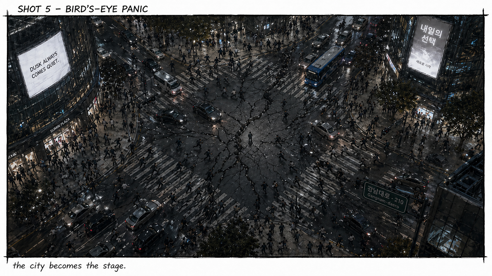
Case 01
Dusk Always Comes Quiet
영화의 첫 장면처럼 보이는 도시 콘셉트 작업입니다. 이미지 생성물을 단순히 모으는 데서 끝내지 않고, 컷 이름과 장면 순서를 정리하며 하나의 시퀀스로 이어지게 구성했습니다.
- 역할
- 콘셉트 정리, 컷 구성, 이미지 선별
- 도구
- Photoshop, Premiere Pro, AI 이미지 도구
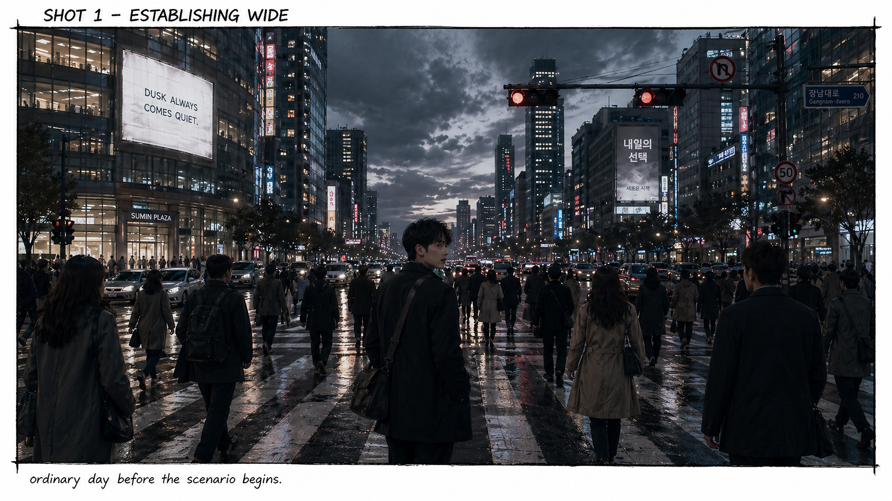
Portfolio
포토샵과 일러스트레이터로 이미지를 만들고, 프리미어 프로와 애프터 이펙트로 장면에 흐름과 움직임을 더해왔습니다. 이 포트폴리오는 제가 어떤 방식으로 배우고, 어떤 결과물까지 밀고 가는지를 보여줍니다.
GTQ 실습을 통해 합성, 보정, 레이아웃, 타이포그래피를 반복하며 익혔습니다.
원본과 수정본, 자동 저장과 최종 파일을 남기며 결과물 중심으로 작업했습니다.
이미지, 영상, 모션, 편집 디자인을 넘나들며 필요한 도구를 직접 시도했습니다.

Case 01
영화의 첫 장면처럼 보이는 도시 콘셉트 작업입니다. 이미지 생성물을 단순히 모으는 데서 끝내지 않고, 컷 이름과 장면 순서를 정리하며 하나의 시퀀스로 이어지게 구성했습니다.
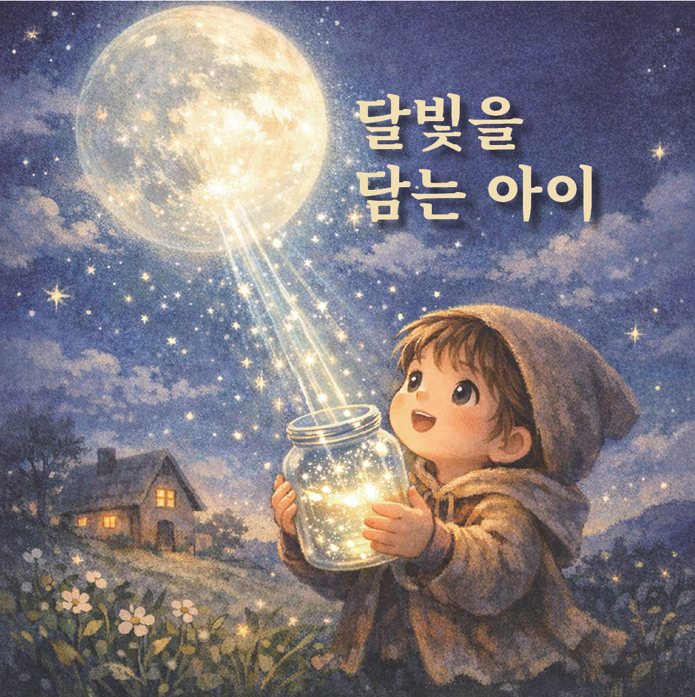
Case 02
동화책 표지와 삽화, PDF 결과물까지 이어진 편집 디자인 작업입니다.
Case 03
After Effects에서 구성과 움직임을 실습하고 렌더링까지 이어간 모션 작업입니다.
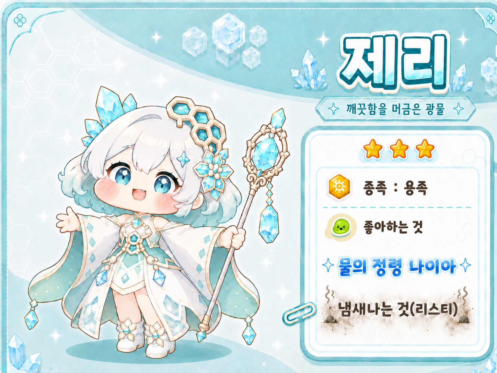
Case 04
캐릭터 이미지와 정보 요소를 한 화면에 정리한 그래픽 레이아웃 작업입니다.
Practice Archive
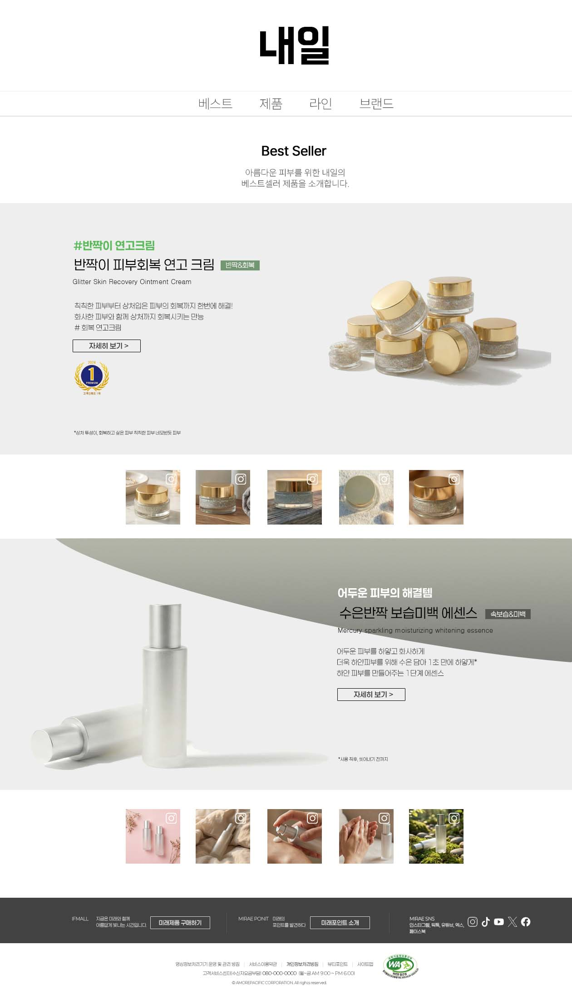
Web Design / Layout
제품 정보, 이미지, 메뉴, 하단 영역을 한 화면 흐름으로 배치하며 웹페이지형 레이아웃을 연습했습니다.
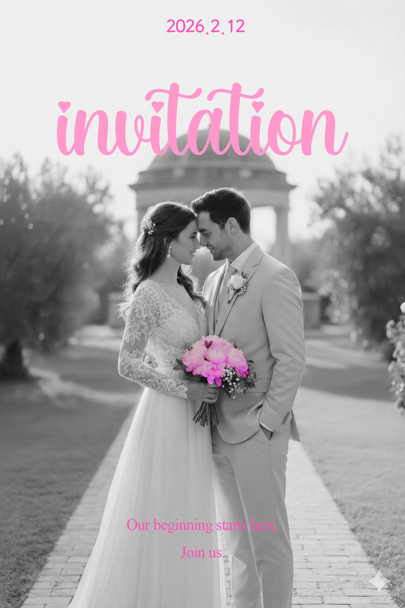
Invitation / Typography
사진 위에 컬러 포인트와 타이포그래피를 얹어 행사 분위기를 전달하는 편집 실습입니다.
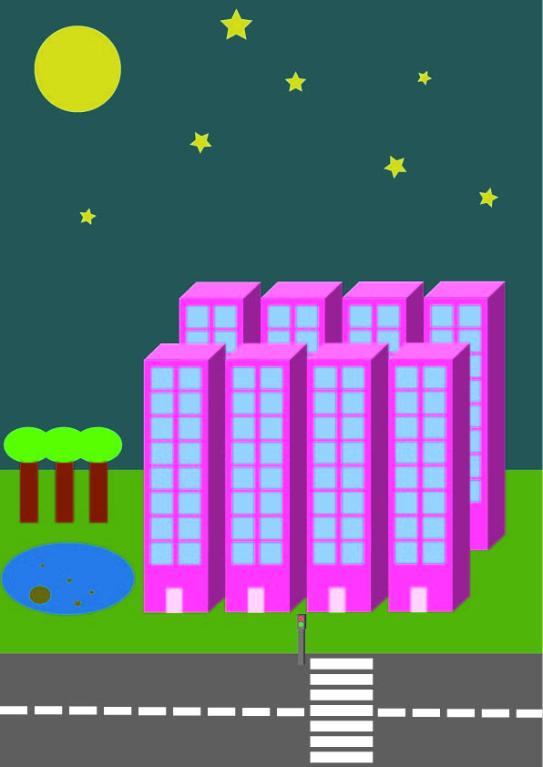
Illustration / Shape
건물, 도로, 달, 나무처럼 단순한 요소를 조합해 장면을 만드는 그래픽 실습입니다.
After Effects / Motion
컴포지션을 만들고 미디어 인코더로 출력하며 모션 제작의 마무리 과정을 익혔습니다.
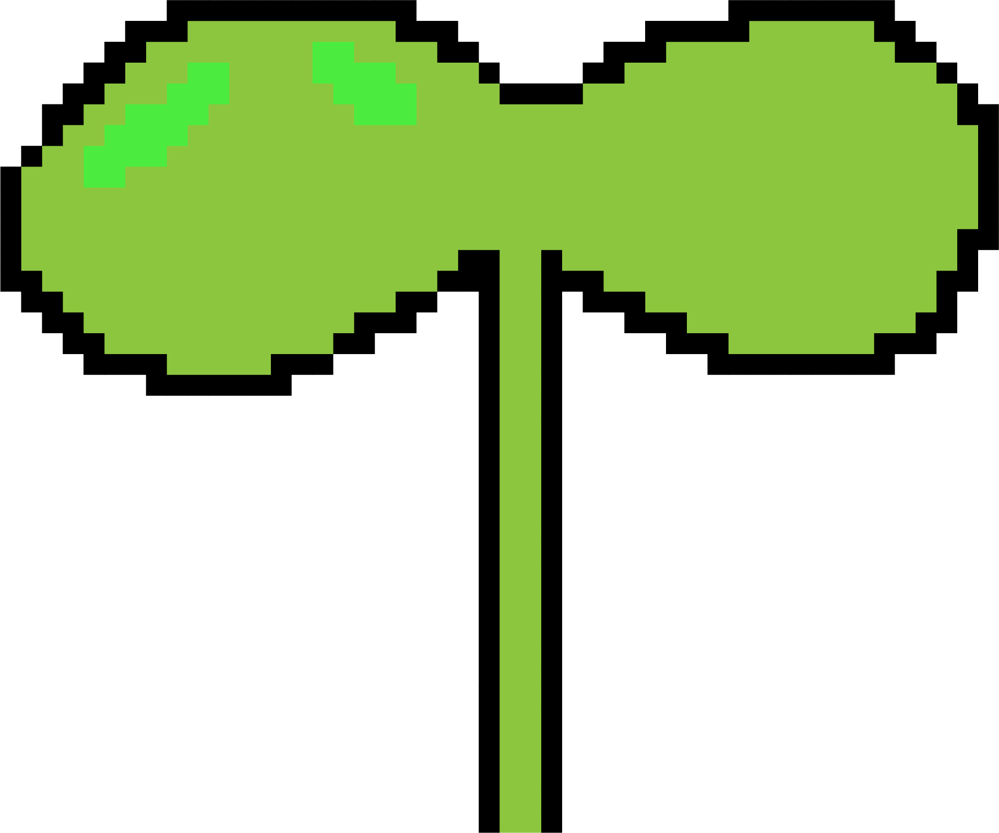
Object / Graphic
단순한 그래픽 요소를 분리해 이후 모션이나 합성에 활용할 수 있도록 만든 작업입니다.
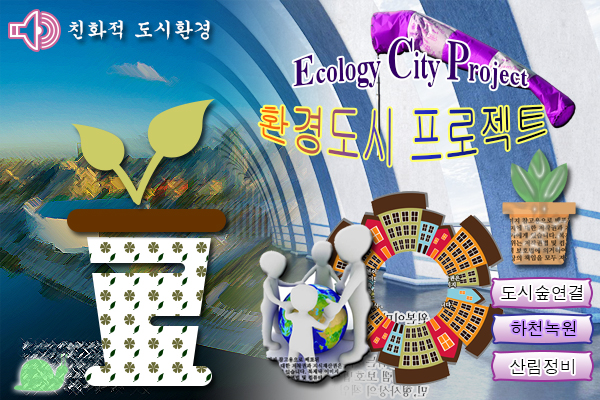
GTQ / Photoshop
실습 날짜와 원본·수정본을 남기며 포토샵의 합성, 보정, 배치 감각을 꾸준히 다졌습니다.
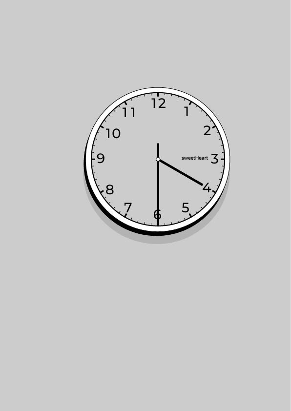
Illustrator / Object
단순한 오브젝트를 만들며 선, 간격, 균형을 확인하는 그래픽 실습입니다.
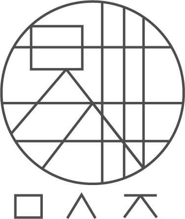
Logo / Grid
그리드와 기본 도형을 통해 로고의 비율과 형태를 잡는 작업을 시도했습니다.
Growth
GTQ 포토샵 실습, 폰트 정리, 기본 합성·편집 작업을 반복했습니다.
Illustrator와 그래픽 실습으로 버튼, 도형, 초대장, 웹디자인 형태를 다뤘습니다.
Premiere Pro로 쇼츠, 명언 영상, 오디오 소스, 화면 구성 실습을 진행했습니다.
동화책, 포트폴리오, 영화형 스토리보드와 영상 소스를 만들며 완성형 프로젝트를 늘렸습니다.
After Effects 모션 작업과 함께 봇·게임 코드 실험까지 시도하며 도구의 범위를 넓혔습니다.
Toolkit
Direction
앞으로도 이미지, 영상, 모션을 연결해 사람들에게 명확하게 전달되고 기억에 남는 콘텐츠를 만드는 제작자로 성장하고 싶습니다.